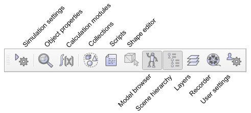
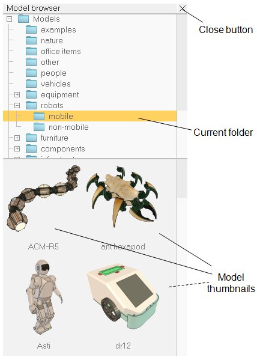

|

User interface
The CoppeliaSim application is composed by several elements. Its main elements are:
a console window: under Windows, when the CoppeliaSim application starts, a console window is created but directly hidden again. This default behavior of hiding the console window can be altered in the user settings dialog. Under Linux, CoppeliaSim needs to be started from the console, which stays visible throughout the whole CoppeliaSim session. Under MacOSX, best is to start CoppeliaSim from a terminal, in order to have messages visible. The console or terminal window displays what plugins were loaded and whether their initialization procedure was successful. The console window is not interactive and is only used to output information. The user can directly output information to the console window with the print command (from within a script), or with the C printf or std::cout commands from within a plugin. In addition to that, the user can programmatically create auxiliary console windows to display information specific to a simulation for instance.
an application window: the application window is the application's main window. It is used to display, edit, simulate and interact with a scene. The left and right mouse buttons, the mouse wheel as well as the keyboard have specific functions when activated in the application window. Within the application window the functions of the input devices (mouse and keyboard) may vary on context or activation location.
several dialogs: next to the application window, the user can also edit and interact with a scene by adjusting dialog settings or parameters. Each dialog groups a set of related functions, or functions that apply to a same target object. A dialog's content might be context sensitive (e.g. dependent on the object selection state).
Following illustrates a typical view of the CoppeliaSim application:

[User interface elements]
When you launch the CoppeliaSim application, CoppeliaSim will initialized one default scene. The user is free to open several scenes in parallel. Each scene shares the application window and the dialogs with the other scenes, but only the active scene content will be visible in the application window or the dialogs (only one scene is visible at a given time).
In following section, a brief description will be given of the application window's elements. For details about dialogs, refer to the related pages in this reference manual.
application bar: the application bar indicates the type of license of your CoppeliaSim copy, the filename of the scene that is currently being displayed, the time used for one rendering pass (one display pass), and the simulator's current state (simulation state or type of the active edit mode). The application bar, as well as any surface within the application window, can also be used to drag-and-drop CoppeliaSim related files into the scene. Supported files include "*.ttt"-files (CoppeliaSim scene files) and "*.ttm"-files (CoppeliaSim model files).
menu bar: the menu bar allows accessing almost all functionalities of the simulator. Most of the time, the items in the menu bar activate a dialog. The menu bar content is context-sensitive (i.e. it will depend on the current state of the simulator). Most functions in the menu bar can also alternatively be accessed through a popup menu, a double-click on an icon in the scene hierarchy view, or through a click of a toolbar button.
toolbars: the toolbars present functions that are often accessed (e.g. changing the navigation mode, selecting another page, etc.). Some functions in toolbar 1, and all functions in toolbar 2 can also be accessed through the menu bar or popup menu. See further down for more details. Both toolbars can be docked and undocked, but docking works only with their respective initial positions. Following figure explains each toolbar button's function:

[Toolbar 1]

[Toolbar 2]
model browser: the model browser is visible by default, but can be toggled with its corresponding toolbar button. It displays in its upper part a CoppeliaSim model folder structure, and in its lower part, thumbnails of models contained in the selected folder. Thumbnails can be dragged-and-dropped into the scene to automatically load the related model. Caught thumbnails appears dark if the drop area is not supported or not appropriate.

[Model browser]
scene hierarchy: the scene hierarchy is visible by default, but can be toggled with its corresponding toolbar button. It displays the content of a scene (i.e. all scene objects composing a scene). Since scene objects are built in a hierarchy-like structure, the scene hierarchy displays a tree of this hierarchy, and individual elements can be expanded or collapsed. A double-click on an icon opens/closes a property dialog related to the clicked icon. A double-click on an object alias allows editing it. The mouse wheel as well as a drag of the scene hierarchy view's scrollbars allows shifting the content up/down or left/right. Control and shift selection is always supported. Objects in the scene hierarchy can be dragged and dropped onto another object, in order to create a parent-child relationship. The scene hierarchy will display a different content if the simulator is in an edit-mode state. Refer to the shape edit modes for more information.
[Scene hierarchy]
page: each scene may contain up to 8 pages, each of them may contain an unlimited number of views. A page can be seen as container for views. Refer to the pages and views section for more details.
views: there can be an unlimited number of views contained in a page. A view is used to display the scene (itself containing an environment and objects), seen through a viewable object (e.g. cameras, graphs or vision sensors).
information text: the information text displays information related to current object/item selection and to running simulation states or parameters. The text display can be toggled with one of the two small buttons on the upper left side of a page. The other button can be used to toggle a white background, giving a better contrast depending on the background color of a scene.
status bar: the status bar displays information related to performed operations, commands, and also displays error messages from script interpreters. From within a script the user can also output strings to the status bar or console with the sim.addLog function. The status bar displays only two lines by default, but it can be resized using its horizontal separation handle.
Lua commander: a read-eval-print loop, that adds a text input to the CoppeliaSim status bar, allowing to enter and execute Lua code on the fly, like in a terminal. The code can be run in the sandbox script, or any other active script in CoppeliaSim.
custom user interfaces: custom user interfaces are user-defined UI surfaces that can be used to display information (text, images, etc.) or a custom dialog, allowing to interact with the user in a customized way.
popup menu: popup menus are the menus that appear after a right mouse button click. To activate a popup menu, make sure the mouse doesn't move during the click operation, otherwise the camera rotation mode may be activated (see the camera section for more details). Each surface within the application window (e.g. scene hierarchy view, page, view, etc.) may trigger a different popup menu (context-sensitive). The content of popup menus may also change depending on the current simulation state or edit mode. Most popup menu function can also be accessed through the menu bar, except for the view-menu item that only appears when the popup menu is activated on a view or page.
|